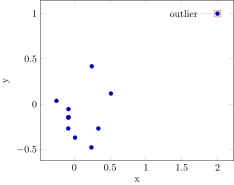
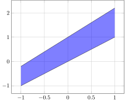

Using LaTeX code
PGFPlotsX has does not specify types for all LaTeX constructs. This is not a limitation, as you can just provide LaTeX code as strings, which are emitted directly. They can be freely mixed with other types, which are converted to LaTeX with print_tex. Since elements of AbstractVectors are printed in turn, this allows for a compact style.
Annotating plots
The example below demonstrates the use of \node. Note the following:
we use the
rawstring literal, which ensures that we don't need to escape the\;"\\node"would work identicallythe options (with
{}, also containing a color) and coordinates we mix in just work as they should,we provide separating whitespace, and the terminating
;.
using Colors
x = vcat(randn(10) ./ 4, 2.0)
y = vcat(randn(10) ./ 4, 1.0)
@pgf Axis(
{
only_marks,
xlabel = "x",
ylabel = "y"
},
Plot(Table(x, y)),
[raw"\node ",
{
draw = parse(Colorant, "tomato3"),
pin = "180:outlier"
},
" at ",
Coordinate(x[end], y[end]),
"{};"])
LaTeX code for plot elements
The example below demonstrates how strings can be included as “data” for Plot. Specifically, here we name two paths, then use fill between [of=f and g] to fill the space between them. This requires the use of the fillbetween library for PGFPlots, which we insert in the premable.
push!(PGFPlotsX.CUSTOM_PREAMBLE, raw"\usepgfplotslibrary{fillbetween}")
x = range(-1, 1, length = 51)
@pgf Axis({ xmajorgrids, ymajorgrids },
Plot({ "name path=f", no_marks, }, Coordinates(x, x)),
Plot({ "name path=g", no_marks, }, Coordinates(x, 1.2 .* x .+ 1)),
Plot({ thick, color = "blue", fill = "blue", opacity = 0.5 },
raw"fill between [of=f and g]"))